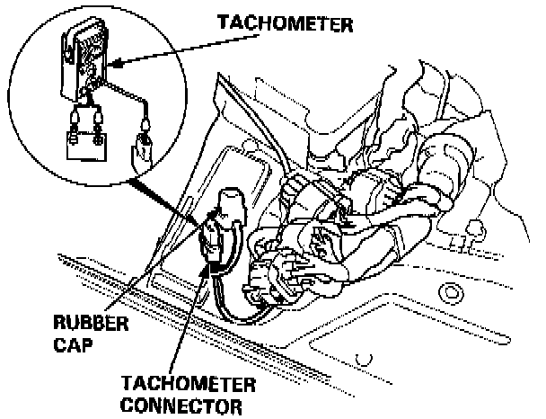
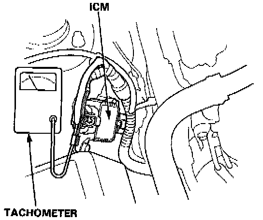
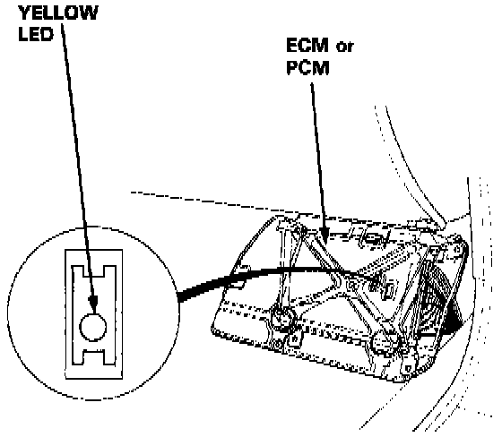
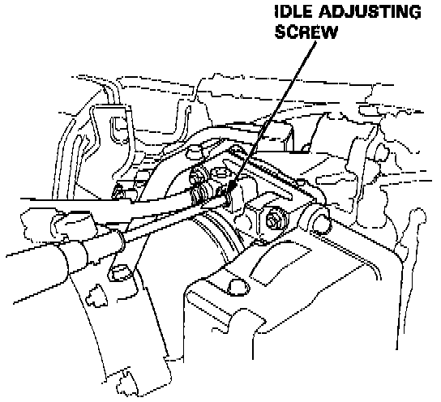

Idle Speed: Adjustments
NOTE: (Canada) Pull the parking brake lever up. Start the engine, then check that the headlights are off.1. Connect a tachometer.
2. Start the engine. Hold the engine at 3,000 rpm with no load (A/T in (N) or (P) position, M/T in neutral) until the radiator fan comes on, then let it idle.

^ Contact type
Remove the rubber cap from the tachometer connector and connect a tachometer.

^ Non-contact type
Connect a tachometer to loop of ICM.
3. Set the steering in the straight ahead position, and check idling in no-load conditions in which the headlights, blower fan, rear defogger, radiator fan, and air conditioner are not operating. (All accessories turned off.)
Idle speed should be:
GS Model
680 ± 50 rpm (M/T)
630 ± 50 rpm (A/T in [N] or [P] position)
L, LS Model
650 ± 50 rpm (M/T)
600 ± 50 rpm (A/T in [N] or [P] position)
4. Connect the service check connector terminal with a jumper wire.

5. Check the yellow LED display at the ECM (Engine Control Module) or PCM (Powertrain Control Module) under the dash on the passenger side.
^ If yellow LED is off
Do not adjust idle adjusting screw. Go on to step 6.
^ If yellow LED is blinking
Adjust idle adjusting screw 1/4 turn clockwise.
^ It yellow LED is on
Adjust idle adjusting screw 1/4 turn counterclockwise.
NOTE: On a new engine (less than 310 miles or 500 km) the yellow LED may light even though the idle adjusting screw is properly set. However, no adjustment should be made.

^ Check that the yellow LED goes off after approximately 30 seconds.
If it does not go off, rotate the idle adjusting screw by 1/4 turn in the same direction, and repeat the same operation until the yellow LED goes off.
6. Check the idle speed in the following conditions.
^ With headlights (Hi) and rear window defogger ON.
^ While the steering wheel is turning.
^ With air conditioner compressor on.
Idle speed should be:
GS Model
680 ± 50 rpm (M/T)
630 ± 50 rpm (A/T in [N] or [P] position)
L, LS Model
650 ± 50 rpm (M/T)
600 ± 50 rpm (A/T in [N] or [P] position)
^ If applicable, with automatic transmission in gear (except (N) or (P) position).
Idle should remain stable at:
GS Model: 630 ± 50 rpm
L, LS Model: 600 ± 50 rpm
7. Remove the jumper wire from the service check connector terminal.
NOTE: When there is no code stored, the MIL will stay on if the service check connector is jumped.